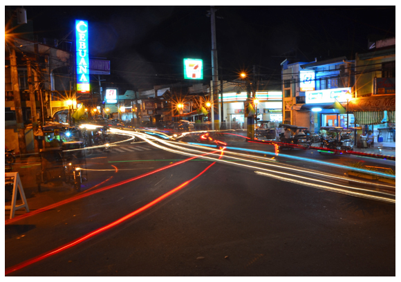

ECONOMY

Tanay, Rizal, is characterized by a diverse local economy with 1,935 registered and operational trade and industry establishments as of April 2010, highlighting a vibrant local commerce scene. The town's economy is distributed across primary, secondary, and tertiary sectors, reflecting a balanced mix of agricultural, manufacturing, and service industries. Within the primary sector, Tanay has 31 commercial establishments, making up 1.60% of its total, including 2 agricultural farms, 26 livestock farms, 2 monkey breeding farms, and 1 corporation engaged in quarrying and mining. These activities underscore Tanay's rich natural resource utilization, focusing on agriculture, livestock, and mineral extraction.
The secondary sector in Tanay involves manufacturing and construction, indicating a presence of industries like metalworking, engineering, and perhaps small-scale manufacturing, although specific details on these are not provided. This sector is crucial for transforming raw materials from the primary sector into finished goods.
The tertiary sector, representing services, plays a significant role in Tanay's economy, encompassing retail, transportation, tourism, healthcare, and banking services. This sector caters to both the local population and businesses, contributing significantly to the town's economic vibrancy.
Business tax revenue in Tanay has shown improvement year over year, reflecting a positive business climate and the growth of local commerce. The economic activities in Tanay are a testament to a thriving community that leverages its natural resources, industrial capabilities, and service-oriented enterprises for sustainable development. The balance across the three economic sectors highlights Tanay's diverse economic base and potential for future growth.